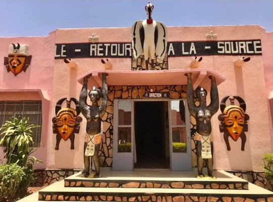

Centre Culturel Sénoufo René Fournier
Description
Le Centre Culturel Sénoufo René Fournier est un espace dédié à la préservation et à la promotion de la culture Sénoufo. On y découvre des expositions d'objets traditionnels, des masques, des instruments de musique, ainsi que des œuvres d'art contemporaines inspirées des traditions locales. Le centre organise également des activités culturelles, des conférences et des spectacles pour valoriser l’identité culturelle sénoufo.
Historique
Ce centre porte le nom de René Fournier, un chercheur français passionné par la culture africaine et particulièrement celle des Sénoufo. Il fut l’un des premiers à documenter et collectionner de nombreux objets de cette culture. Le centre a été fondé pour honorer son travail et perpétuer la mémoire et le patrimoine des Sénoufo dans la région de Bobo-Dioulasso.